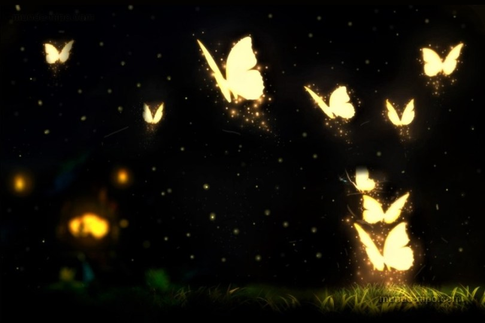

A metamorfose é um processo de desenvolvimento pós embrionário que ocorre em diversos grupos de animais. Geralmente envolve uma transformação rápida e muito notável a partir de uma larva para um estágio larval subsequente ou para um indivíduo adulto - que pode ser jovem ou sexualmente maduro.
